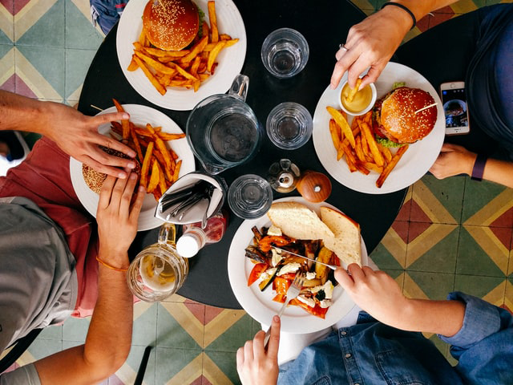
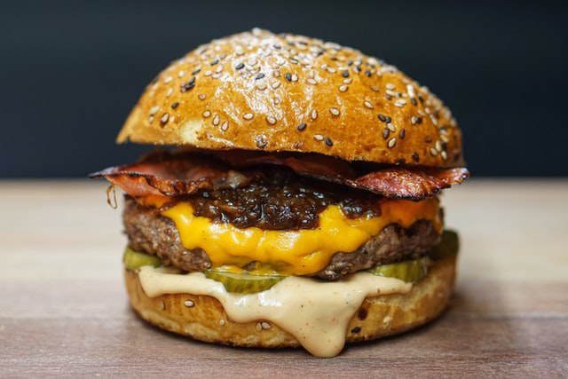
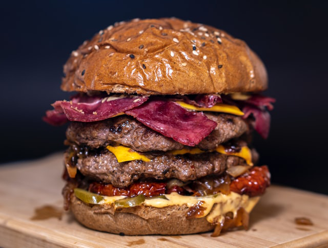

Daniel Rodas fue emprendedor nato desde el principio. En 2005, construyó un negocio desde cero: un puesto de hamburguesas montado en un pequeño container que era remolcado por toda la capital en una pick-up del 99. Lo llamaron BurgerGrill. El Señor Rodas siempre trabajó incansablemente para hacer de BurgerGrill lo que es hoy: una franquicia de gran éxito y creciente a nivel nacional. Hay una razón por la que BurgerGrill es un nombre familiar. Son las hamburguesas, por supuesto, pero también es el señor Daniel Rodas. Es difícil mantener las cosas simples, pero esa es la forma de BurgerGrill. Es difícil mantener un negocio en funcionamiento durante más de 15 años. Aún más difícil: perseguir el mismo estándar de excelencia que siempre nos ha caracterizado en todos nuestro platos y postres.
Todos los días, buscamos los ingredientes más frescos y de calidad, elaborando a mano todas y cada una de las hamburguesas a la perfección absoluta. Ya sean nuestras carnes res prensadas a mano y nunca congeladas, aros de cebolla hechos a mano o nuestro chile casero. Y no solo son nuestras hamburguesas. Nuestras papas fritas se cortan gruesas y se fríen hasta obtener un dorado brillante y nos atrevemos a decir que tenemos los más exquisitos postres a nivel local. Queremos seguir siendo el restaurante de tus memorias, el restaurante de tus momentos felices. Es por ello que estamos en una búsqueda continua de mejorar siempre en pro de nuestros clientes. Visítanos y estarás de acuerdo que: después de 15 años, todavía conservamos el mismo sabor y la misma calidad.
Es difícil mantener las cosas calidad, pero esa es la forma de BurgerGrill. Y es por lo que hemos estado trabajando en ello durante más de 15 años, persiguiendo el máximo estándar de excelencia. Todo está meticulosamente elaborado a mano con ingredientes de la más fresca calidad. Ya sean nuestras carnes de res prensadas a mano, nunca congeladas, aros de cebolla hechos a mano o nuestro chile casero. Y no es solo son nuestras hamburguesas. Nuestros batidos incluyen helado de primera calidad elaborado a mano. Nuestras papas fritas se cortan gruesas y se fríen hasta obtener un dorado brillante. Visítenos y estará de acuerdo, realmente somos el mejor puesto de hamburguesas a nivel nacional.
 La Grill: La Hamburguesa que nos hizo famosos y la especialidad de la casa. Una fresca y 100% pura carne magra, cocina a la parrilla y servida en nuestro pan de calidad con unas deliciosas y crujientes rebanadas de tocino, acompañadas de la salsa secreta de la casa.
 La Doble Grill: Dos trozos de la más fresca y 100% pura carne magra, cocina a la parrilla y servida en nuestro pan de calidad con unas deliciosas y crujientes rebanadas de tocino, acompañadas de la salsa secreta de la casa.
La Mortal: Tres trozos de la más fresca y 100% pura carne magra, cocina a la parrilla y servida en nuestro pan de calidad con unas deliciosas y crujientes rebanadas de tocino, acompañadas de la salsa secreta de la casa y nuestra poderosa salsa picante. Apta solo para valientes.
¿Buscas algo sin Carne? Al estar comprometidos con nuestra clientela, sabemos que hay personas que la prefieren sin carne. Es por ello que como Burger Grill hemos preparado un menú especial para que todos nuestros clientes vegetarianos/veganos. Atrévete a probar cualquiera de nuestras diferentes 9 opciones que hay para ti.
Sports and Grill: Por que sabemos lo mucho que disfrutas de ver tus partidos acompañados de una buena comida. Es por ello que puedes disfrutar de tus partidos acompañado de una fabulosa promoción de 2 hamburguesas dobles por el precio de 1. ¿Qué esperas para probarlas?
A lo largo de nuestra amplia carrera como restaurante. Hemos logrado consolidar tres franquicias. Contamos con 2 restaurantes en la capital Managua y con uno fuera de ella, en Estelí. Si bien nuestras 3 localidades pertenecen a la misma cadena de restaurante, podemos decir que cada uno de ellos es único en su forma de ser, pero sin despegarse mucho de nuestro estilo como marca. Queremos que cada uno de nuestros clientes puedan tener una experiencia diferente al visitar nuestras 3 localidades, pero deseamos que puedan sentirse en la confianza que recibirán el mismo trato, servicio y calidad de nuestros productos que tanto nos caracteriza. Nuestros estanderes de calidad nos permite que esto sea posible, ya que nuestras rigurosas reglas buscan que el cliente tenga la mejor experiencia posible. A continuación, te contamos un poco de cada una de nuestras sucursales de BurgerGrill.
7 sur, Managua: Es nuestra sucursal madre y donde este pequeño sueño del Sr. Rodas empezó. Fundada en 2006, fue la primera sucursal de nuestra cadena de restaurantes. Tiene ese aspecto tan característico que lo destaco en su momento de los demás restaurantes de la capital, pero con los años hemos ido mejorándolo y actualizándolo sin perder ese aspecto tan característico de BurgerGrill. Este local de igual forma cuenta con un salón privado para diferentes eventos, con una capacidad para 30 personas. Si quieres un viaje en el tiempo para revivir los recuerdos de tu niñez, es la mejor opción para visitarnos y disfrutar de nuestro menú de calidad.
Los Robles, Managua: Nuestra sucursal mas reciente. Abierta al publico en el 2015 en conmemoración a nuestro decimo aniversario. BurgerGrill, Los Robles cuenta con una estética actualizada, pero con las mismas características retro que nos identifica. En 2017 gano el premio al mejor restaurante a nivel nacional en las categorías de calidad, higiene y eficiencia. Demostrando una vez mas nuestro compromiso con nuestros clientes por proveer lo mejor para ello. Esta sucursal cuenta con nuestro primer Drive-thru y también un área con juegos atractivos para los mas pequeños del hogar. Un lugar especial para crear nuevas experiencias y memorias.
Parque Central, Estelí: Esta sucursal apareció con la necesidad de comenzar a expandir poco a poco nuestra presencia a nivel territorial. Estelí fue una de las primeras ciudades conocidas por el sr. Rodas. Su rápido crecimiento económico y su posición geográfica la convirtió en una perfecta candidata para poder abrir nuestra primera sucursal en el norte. Fundada en los corazones de nuestros norteños desde el 2010, nuestra segunda sucursal tiene la misma esencia que nuestra primera sucursal, esto se hizo con el fin de que las personas del norte del país, pudiesen tener la misma experiencia que la gente que nos visitaban en la capital. Cuenta con un pequeño salón para eventos con capacidad de 20 personas, perfecto para eventos familiares o reuniones de amigos.
¿Tiene alguna sugerencia o comentario sobre una visita reciente?
Nos tomamos muy en serio los comentarios de nuestros clientes.
Acceda a nuestro sistema de comentarios a continuación.
Gracias por ser fanático de BurgerGrill
Rotonda Universitaria, 2c al norte 2c al oeste. Managua. 19006960 - (505) 2222-0419 tiendaenlinea@burgergrill.com